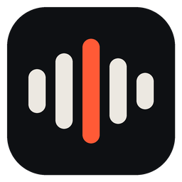

OmniMixEvery app and every speaker,
its own volume and EQ.
See every app playing sound and every speaker, headset and cable you have plugged in. Set volume, mute and EQ for each one.
Free. Windows 10 (2004+) and 11, macOS 14.4 or later on Apple silicon and Intel. Updates itself.
First launch. Windows: if you see "Windows protected your PC", click More info, then Run anyway. Mac: drag OmniMix to Applications. If macOS can't verify the developer, open System Settings → Privacy & Security and click Open Anyway.
Every device
USB-C, USB, Bluetooth, AUX, HDMI and more, each labelled by how it is connected.
Every app
Volume and mute per app, per device and per channel.
10-band EQ
Sub, Bass, Lows, Body, Mud, Mids, Claps, Presence, Hats and Air, for each app and each device.
Private
Playback only. Nothing is recorded. No accounts, no servers.